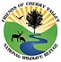

Friends of Cherry Valley National Wildlife Refuge
Who We Are
About Us
Partners
Gallery
Photo Gallery
Video Gallery
Help Support Us
Donate
Membership
Events
Sign Up for our mailing List!
Welcome to the Official Friends of Cherry Valley Website!
Use the Links Above to Navigate
Check out our Events!
Consider Donating!
Become a Member!